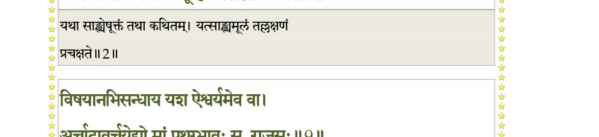
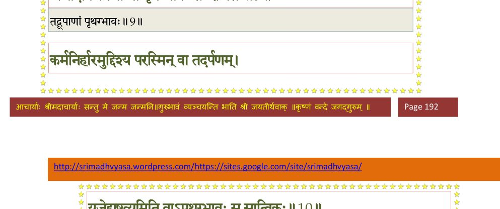
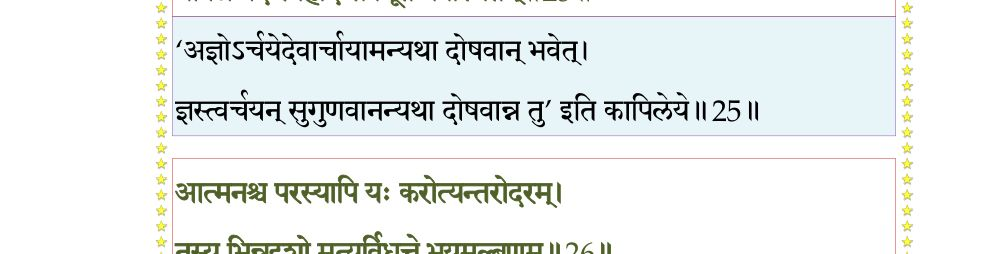
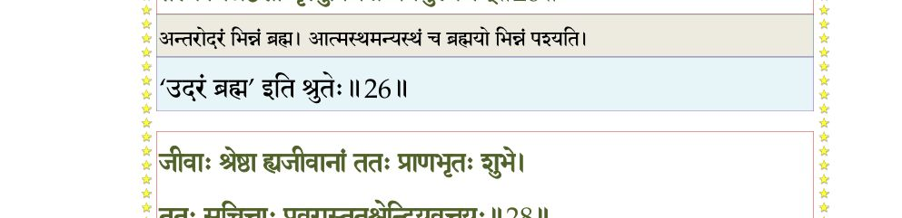
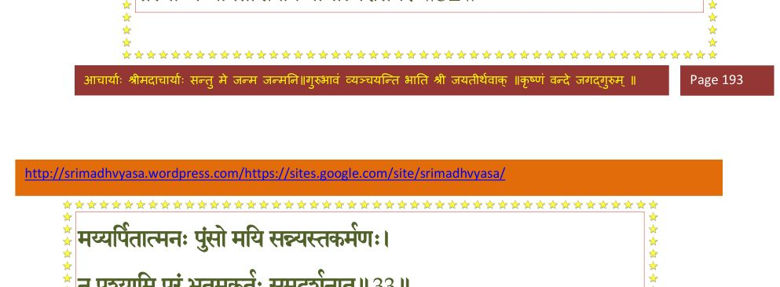
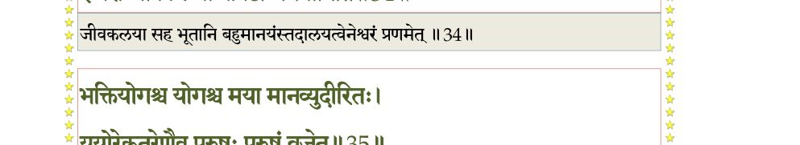
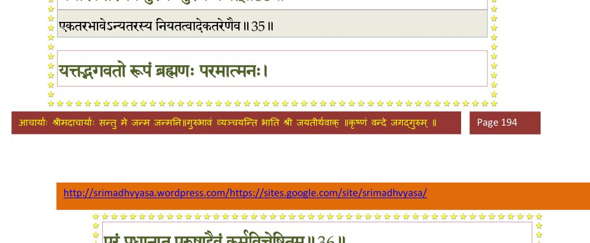
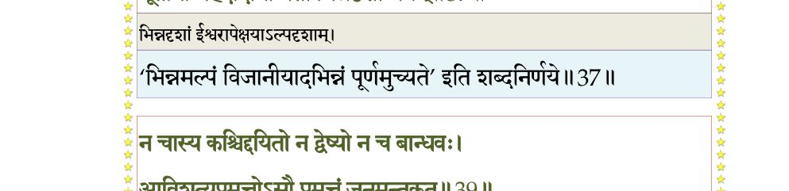
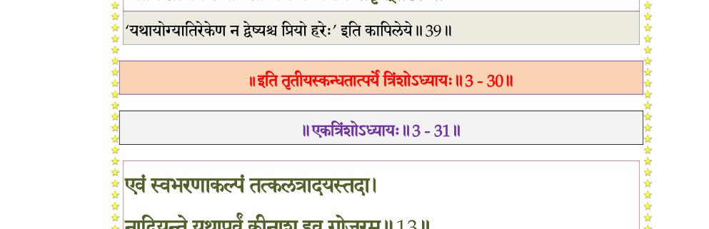

स्कन्ध 3 · अध्याय 30
श्लोक १
देवहूतिरुवाच–
लक्षणं महदादीनां प््राकृतेः पुरुषस्य च ।
स्वरूपं लक्ष्यतेऽमीषां येन तत् पारमार्थिकम्।। १ ।।
लक्षणं महदादीनां प््राकृतेः पुरुषस्य च ।
स्वरूपं लक्ष्यतेऽमीषां येन तत् पारमार्थिकम्।। १ ।।
श्लोक २
यथा साङ्ख्येषु कथितं यन्मूलं तत् प््राचक्षते ।
भक्तियोगस्य मे मार्गं ब्रूहि विस्तरशः प््राभो।। २ ।।
भक्तियोगस्य मे मार्गं ब्रूहि विस्तरशः प््राभो।। २ ।।
भागवततात्पर्यनिर्णय

श्लोक ३
विरागो येन पुरुषो भगवन् सर्वतो भवेत् ।
आचक्ष्व जीवलोकस्य विविधाः कर्मसंसृतीः।। ३ ।।
आचक्ष्व जीवलोकस्य विविधाः कर्मसंसृतीः।। ३ ।।
श्लोक ४
कालस्येश्वररूपस्य परेषां च परस्य ते ।
स्वरूपं वत कुर्वन्ति यद्धेतोः कुशलं जनाः।। ४ ।।
स्वरूपं वत कुर्वन्ति यद्धेतोः कुशलं जनाः।। ४ ।।
श्लोक ५
लोकस्य मिथ्याभिमतेरचक्षुषः
चिरं प््रासुप्तस्य तमस्यनाश्रये ।
श्रान्तस्य कर्मण्यनुविद्धया धिया
त्वमाविरासीः किल योगभास्करः।। ५ ।।
चिरं प््रासुप्तस्य तमस्यनाश्रये ।
श्रान्तस्य कर्मण्यनुविद्धया धिया
त्वमाविरासीः किल योगभास्करः।। ५ ।।
श्लोक ६
मैत्रेय उवाच–
इति मातुर्वचः श्लक्ष्णं प््रातिनन्द्य महामुनिः ।
आबभाषे कुरुश्रेष्ठ प््राीतस्तां करुणार्दितः।। ६ ।।
इति मातुर्वचः श्लक्ष्णं प््रातिनन्द्य महामुनिः ।
आबभाषे कुरुश्रेष्ठ प््राीतस्तां करुणार्दितः।। ६ ।।
श्लोक ७
भगवानुवाच–
भक्तियोगो बहुविधो मार्गैर्भामिनि भाव्यते ।
स्वभावगुणमार्गेण पुंसां भावो विभिद्यते।। ७ ।।
भक्तियोगो बहुविधो मार्गैर्भामिनि भाव्यते ।
स्वभावगुणमार्गेण पुंसां भावो विभिद्यते।। ७ ।।
श्लोक ८
अभिसन्धाय यो हिंसां दम्भं मात्सर्यमेव च ।
संरम्भी भिन्नदृग् भावं मयि कुर्यात् स तामसः।। ८ ।।
संरम्भी भिन्नदृग् भावं मयि कुर्यात् स तामसः।। ८ ।।
श्लोक ९
विषयानभिसन्धाय यश ऐश्वर्यमेव च ।
अर्चादावर्चयेद् यो मां पृथग्भावः स राजसः।। ९ ।।
अर्चादावर्चयेद् यो मां पृथग्भावः स राजसः।। ९ ।।
भागवततात्पर्यनिर्णय

श्लोक १०
कर्मनिर्हारमुद्दिश्य परस्मिन् वा तदर्पणम् ।
यजेद् यष्टव्यमिति वाऽपृथग्भावः स सात्त्विकः।। १० ।।
यजेद् यष्टव्यमिति वाऽपृथग्भावः स सात्त्विकः।। १० ।।
भागवततात्पर्यनिर्णय
श्लोक ११
मद्गुणश्रुतमात्रेण मयि सर्वगुणाश्रये ।
मनोगतिरविच्छिन्ना यथा गङ्गाम्भसोऽम्बुधौ।। ११ ।।
मनोगतिरविच्छिन्ना यथा गङ्गाम्भसोऽम्बुधौ।। ११ ।।
श्लोक १२
लक्षणं भक्तियोगस्य निर्गुणस्य ह्युदाहृतम् ।
औतुक्यव्यवहिता या भक्तिः पुरुषोत्तमे।। १२ ।।
औतुक्यव्यवहिता या भक्तिः पुरुषोत्तमे।। १२ ।।
श्लोक १३
सालोक्यसार्ष्टिसामीप्यसारूप्यैवकत्वमित्युत ।
दीयमानं न गृह्णन्ति विना मत्सेवनं जनाः।। १३ ।।
दीयमानं न गृह्णन्ति विना मत्सेवनं जनाः।। १३ ।।
श्लोक १४
स एव भक्तियोगाख्य आत्यन्तिक उदाहृतः ।
येनातिव्रज्य त्रिगुणान् मद्भावायोपपद्यते।। १४ ।।
येनातिव्रज्य त्रिगुणान् मद्भावायोपपद्यते।। १४ ।।
श्लोक १५
निषेवितेनानिमित्तेन स्वधर्मेण महीयसा ।
क्रियायोगेन शक्तेन नातिहिंस्रेण नित्यशः।। १५ ।।
क्रियायोगेन शक्तेन नातिहिंस्रेण नित्यशः।। १५ ।।
श्लोक १६
मद्धिष्ण्यदर्शनस्पर्शपूजास्तुत्यभिवन्दनैः ।
भूतेषु मद्भावनया सत्येनासङ्गमेन च।। १६ ।।
भूतेषु मद्भावनया सत्येनासङ्गमेन च।। १६ ।।
श्लोक १७
महतां बहुमानेन हीनानामनुकम्पया ।
मैत्र्या वा चात्मतुल्येषु यमेन नियमेन च।। १७ ।।
मैत्र्या वा चात्मतुल्येषु यमेन नियमेन च।। १७ ।।
श्लोक १८
आध्यात्मिकानुश्रवणान्नामसङ्कीर्तनाच्च मे ।
आर्जवेनार्यसङ्गेन निरहंक्रियया तथा।। १८ ।।
आर्जवेनार्यसङ्गेन निरहंक्रियया तथा।। १८ ।।
श्लोक १९
मद्धर्मेणापि यर्ह्येतैः परिसंशुद्ध आशयः ।
पुरुषस्याञ्जसाऽभ्येति श्रुतमात्रगुणं हि माम्।। १९ ।।
पुरुषस्याञ्जसाऽभ्येति श्रुतमात्रगुणं हि माम्।। १९ ।।
श्लोक २०
यथा वातरथो घ्राणमावृङ्क्ते गन्ध आशयात् ।
एवं योगरतं चेत आत्मानमविकारि यत्।। २० ।।
एवं योगरतं चेत आत्मानमविकारि यत्।। २० ।।
श्लोक २१
अहं सर्वेषु भूतेषु भूतात्माऽवस्थितः सदा ।
तमवज्ञाय मां मर्त्यः कुरुतेऽर्चाविडम्बनम्।। २१ ।।
तमवज्ञाय मां मर्त्यः कुरुतेऽर्चाविडम्बनम्।। २१ ।।
श्लोक २२
यो मां सर्वेषु भूतेषु सन्तमात्मानमीश्वरम् ।
हित्वाऽर्चां भजते मौढ्याद् भस्मन्येव जुहोति सः।। २२ ।।
हित्वाऽर्चां भजते मौढ्याद् भस्मन्येव जुहोति सः।। २२ ।।
श्लोक २३
द्विषतः परकाये मां मानिनो भिन्नदर्शिनः ।
भूतेषु बद्धवैरस्य न मनः शान्तिमृच्छति।। २३ ।।
भूतेषु बद्धवैरस्य न मनः शान्तिमृच्छति।। २३ ।।
श्लोक २४
अहमुच्चावचैर्द्रव्यैः क्रिययोत्पन्नयाऽनघे ।
नैव तृप्येऽर्चितोऽर्चायां भूतग्रामावमानिनः।। २४ ।।
नैव तृप्येऽर्चितोऽर्चायां भूतग्रामावमानिनः।। २४ ।।
श्लोक २५
अर्चादावर्चयेत् तावदीश्वरं मां स्वकर्मकृत् ।
यावन्न वेद स्वहृदि सर्वभूतेष्ववस्थितम्।। २५ ।।
यावन्न वेद स्वहृदि सर्वभूतेष्ववस्थितम्।। २५ ।।
भागवततात्पर्यनिर्णय

श्लोक २६
आत्मनश्च परस्यापि यः करोत्यन्तरोदरम् ।
तस्य भिन्नदृशो मृत्युर्विधत्ते भयमुल्बणम्।। २६ ।।
तस्य भिन्नदृशो मृत्युर्विधत्ते भयमुल्बणम्।। २६ ।।
भागवततात्पर्यनिर्णय

श्लोक २७
अथ मां सर्वभूतेषु भूतात्मानं कृतालयम् ।
अर्हयेद् दानमानाभ्यां मैत्र्या भिन्नेन चक्षुषा।। २७ ।।
अर्हयेद् दानमानाभ्यां मैत्र्या भिन्नेन चक्षुषा।। २७ ।।
श्लोक २८
जीवाः श्रेष्ठा ह्यजीवानां ततः प््र•णभृतः शुभे ।
ततः सचित्ताः प््रावरास्ततश्चेन्द्रियवृत्तयः।। २८ ।।
ततः सचित्ताः प््रावरास्ततश्चेन्द्रियवृत्तयः।। २८ ।।
भागवततात्पर्यनिर्णय
श्लोक २९
अत्रापि स्पर्शवेदिभ्यः प््रावरा रसवेदिनः ।
तेभ्यो गन्धविदः श्रेष्ठास्ततः शब्दविदो वराः।। २९ ।।
तेभ्यो गन्धविदः श्रेष्ठास्ततः शब्दविदो वराः।। २९ ।।
श्लोक ३०
रूपभेदविदस्तत्र ततश्चोभयतोदतः ।
तेषां बहुपदः श्रेष्ठाश्चतुष्पादस्ततो द्विपात्।। ३० ।।
तेषां बहुपदः श्रेष्ठाश्चतुष्पादस्ततो द्विपात्।। ३० ।।
श्लोक ३१
ततो वर्णाश्च चत्वारस्तेषां ब्राह्मण उत्तमः ।
ब्राह्मणेष्वपि वेदज्ञो ह्यर्थज्ञोऽभ्यधिकस्ततः।। ३१ ।।
ब्राह्मणेष्वपि वेदज्ञो ह्यर्थज्ञोऽभ्यधिकस्ततः।। ३१ ।।
भागवततात्पर्यनिर्णय
श्लोक ३२
अर्थज्ञात् संशयच्छेत्ता ततः श्रेयान् स्वधर्मकृत् ।
मुक्तसङ्गस्ततो भूयान् न दोग्धा धर्ममात्मनः।। ३२ ।।
मुक्तसङ्गस्ततो भूयान् न दोग्धा धर्ममात्मनः।। ३२ ।।
श्लोक ३३
तस्मान्मय्यर्पिताशेषक्रियार्थात्मरतिर्नरः ।
मय्यर्पितात्मनः पुंसो मयि संन्यस्तकर्मणः।। ३३ ।।
मय्यर्पितात्मनः पुंसो मयि संन्यस्तकर्मणः।। ३३ ।।
भागवततात्पर्यनिर्णय

श्लोक ३४
न पश्यामि परं भूतमकर्तुः समदर्शनात् ।
मनसैतानि भूतानि प््राणमेद् बहुमानयन् ।
ईश्वरो जीवकलया प््राविष्टो भगवानिति।। ३४ ।।
मनसैतानि भूतानि प््राणमेद् बहुमानयन् ।
ईश्वरो जीवकलया प््राविष्टो भगवानिति।। ३४ ।।
भागवततात्पर्यनिर्णय

श्लोक ३५
भक्तियोगश्च योगश्च मया मानव्युदीरितः ।
ययोरेकतरेणैव पुरुषः पुरुषं व्रजेत्।। ३५ ।।
ययोरेकतरेणैव पुरुषः पुरुषं व्रजेत्।। ३५ ।।
भागवततात्पर्यनिर्णय

श्लोक ३६
यत् तद् भगवतो रूपं ब्रह्मणः परमात्मनः ।
परं प््राधानात् पुरुषाद् दैवं कर्मविचेष्टितम्।। ३६ ।।
परं प््राधानात् पुरुषाद् दैवं कर्मविचेष्टितम्।। ३६ ।।
भागवततात्पर्यनिर्णय
श्लोक ३७
रूपभेदास्पदं दिव्यं काल इत्यभिधीयते ।
भूतानां महदादीनां यतो भिन्नदृशां भयम्।। ३७ ।।
भूतानां महदादीनां यतो भिन्नदृशां भयम्।। ३७ ।।
भागवततात्पर्यनिर्णय

श्लोक ३८
योऽन्तः प््राविश्य भूतानि भूतैरत्त्यखिलाश्रयः ।
स विष्ण्वाख्यो घिया ज्ञेयः कालः कलयतां प््राभुः।। ३८ ।।
स विष्ण्वाख्यो घिया ज्ञेयः कालः कलयतां प््राभुः।। ३८ ।।
श्लोक ३९
न चास्य कश्चिद् दयितो न द्वेष्यो न च बान्धवः ।
आविशत्यप््रामत्तोऽसौ प््रामत्तं जनमन्तकृत्।। ३९ ।।
आविशत्यप््रामत्तोऽसौ प््रामत्तं जनमन्तकृत्।। ३९ ।।
भागवततात्पर्यनिर्णय

श्लोक ४०
यद्भयाद् वति वातोऽयं सूर्यस्तपति यद्भयात् ।
यद्भयाद् वर्षते देवो भगणो भाति यद्भयात्।। ४० ।।
यद्भयाद् वर्षते देवो भगणो भाति यद्भयात्।। ४० ।।
श्लोक ४१
यद् वनस्पतयो भीता लताश्चौषधिभिः सह ।
स्वे स्वे कालेऽभिगृह्णन्ति पुष्पाणि च फलानि च।। ४१ ।।
स्वे स्वे कालेऽभिगृह्णन्ति पुष्पाणि च फलानि च।। ४१ ।।
श्लोक ४२
स्रवन्ति सरितो भीता नोत्सर्पत्युदधिर्यतः ।
अग्निरिन्धे सगिरिभिर्भूर्न मज्जति यद्भयात्।। ४२ ।।
अग्निरिन्धे सगिरिभिर्भूर्न मज्जति यद्भयात्।। ४२ ।।
श्लोक ४३
नभो ददाति श्वसतां मार्गं यन्नियमाददः ।
लोकस्य देहं तनुते महान् सप्तभिरावृतः।। ४३ ।।
लोकस्य देहं तनुते महान् सप्तभिरावृतः।। ४३ ।।
श्लोक ४४
गुणाभिमानिनो देवाः सर्गादिष्वस्य यद्भयात् ।
वर्तन्तेऽनुयुगं येषां वश एतच्चराचरम्।। ४४ ।।
वर्तन्तेऽनुयुगं येषां वश एतच्चराचरम्।। ४४ ।।
श्लोक ४५
सोऽनन्तोऽन्तकरः कालोऽनादिरादिकृदव्ययः ।
जनं जनेन जनयन् मारयन् मृत्युनाऽऽत्मना।। ४५ ।।
जनं जनेन जनयन् मारयन् मृत्युनाऽऽत्मना।। ४५ ।।
।। इति श्रीमद्भागवते तृतीयस्कन्धे त्रिंशोऽध्यायः ।।